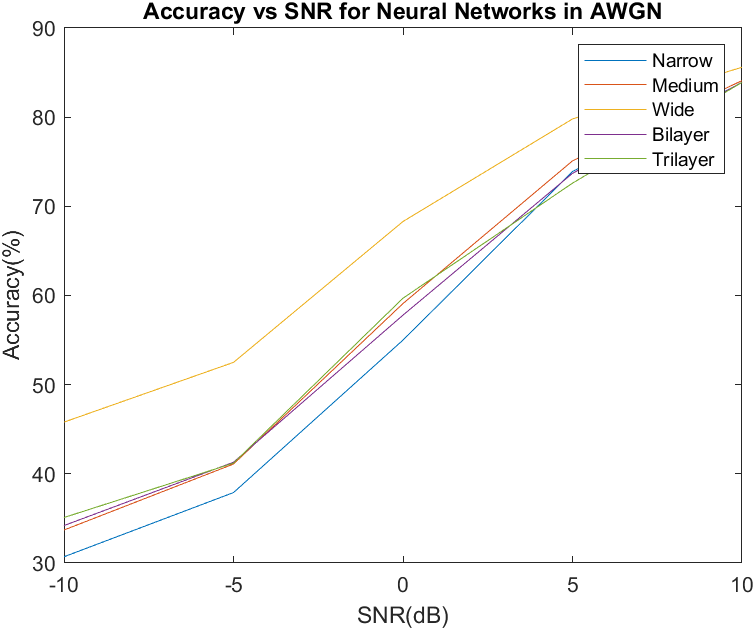
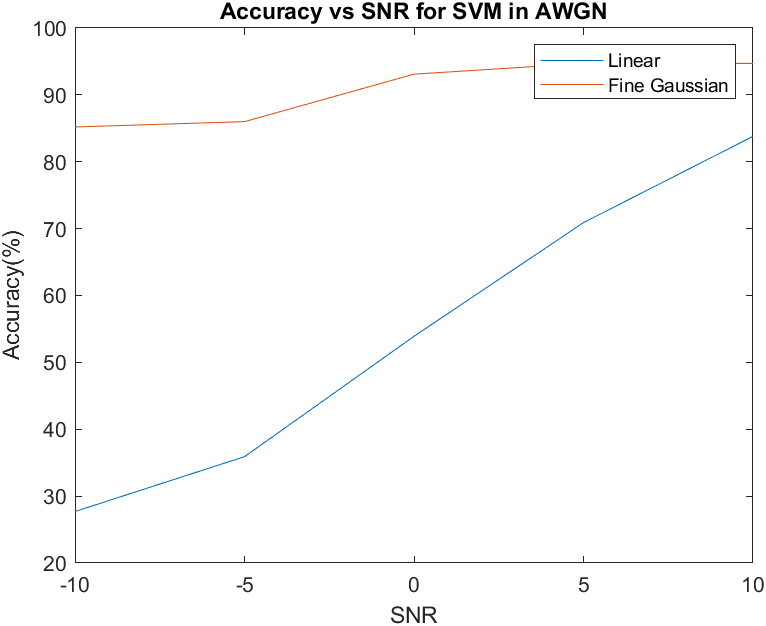
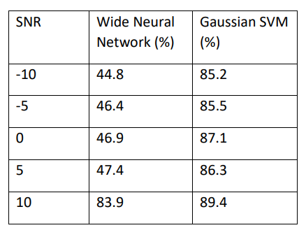

Design Project
University of Witwatersrand | Design
Background
The project was my Final Year Design Project. The project was done individually under a Supervisor. The theme I chose was Communications and my Supervisor was Professor F. Takeweira. The project aimed to implement Machine learning based automatic modulation recognition for digital communications. The project was implemented in Matlab and utilises the Communications toolbox to generate the dataset and the Machine Learning Toolbox for Feature Extraction and Classification.
Features
- Implementation of a AWGN and Rayleigh Fading Channel for data transmission.
- Channel Equilization at the Receiver
- Feature Extraction from the Received Signal
- Comparison of Various Neural Networks to determine the most Accurate model.
- Comparison of Various Support Vector Machines to determine the most Accurate model.
- Comparison of the most Accurate Neural Network to the most Accurate Support Vector Machine model.
Read the entire Report
Main Results
Artifical Neural Networks
Comparison of Neural Networks in AWGN

Support Vector Machines
Comparison of Support Vector Machines in AWGN

Fading Channel
ANN vs SVM in a Fading Channel
